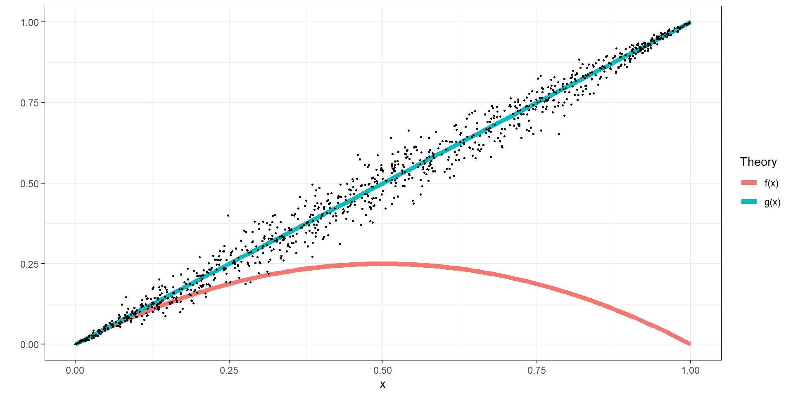
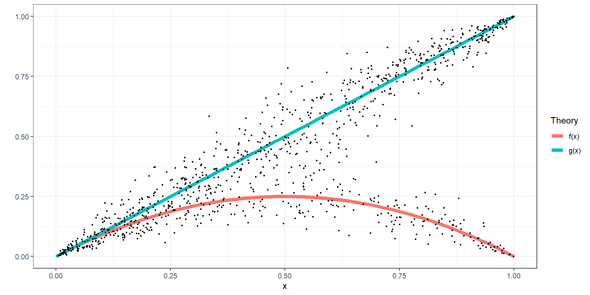
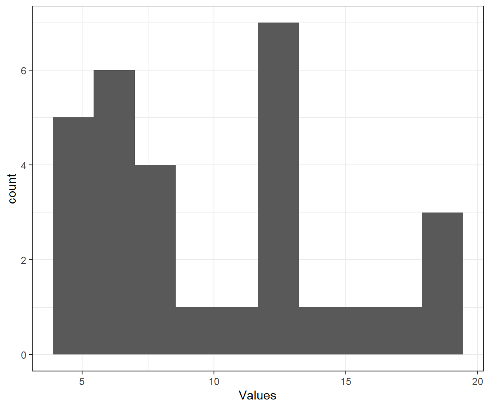

ECON 4-6260 Behavioral Economics
Spring 2021
1 (PART) Common content (both ECON 4260 and ECON 6260)
1.1 Introduction
1.1.1 Boring stuff first: Expectation for class
- We will start and finish on time
- Attendance is expected
- All due dates are final outside of excused absences
- You are checking your UToledo email
- You have read and understand the Syllabus
- For all classroom experiments, at least one person will be paid. You will understand the payment mechanism before starting an experiment.
1.1.2 What will we be studying?
- Insights from Psychology
- Especially judgment & decision-making
- Extensions of “standard” (non-behavioral) economic theory
- Markets
- Choice theory
- Games
- Experimental methods
- Non-experimental methods
1.1.3 Doing economic research without experiments
Research question \(\rightarrow\) I need data
- Data might not exactly answer the research question
- Often difficult to establish a causal relationship
- Often requires assumptions to be made about the data that you cannot test.
I have data \(\rightarrow\) what questions can I answer?
- Limits the questions you can answer
- Still difficult to establish a causal relationship
- Still (often) requires untestable assumptions
1.1.4 Economic experiments
We will be using economic experiments to learn about concepts in Behavioral Economics.
Mostly, we will use laboratory experiments
- Use people who have volunteered to participate. Usually undergrads.
- In this class: you
- Give them a task to perform, and observe their behavior.
- Pay them money based on their decisions
1.1.5 Why pay money?
Mankiw’s 10 Principles of Economics: “4. People respond to incentives”
If I pay you enough, I will have a good idea about what your incentives are.
This means that:
- Participants need to understand {} decisions determine payments
- Explain to participants how this works before they make decisions (and maybe verify)
- Participants need to believe that decisions will determine payments
- The experimenter will never lie to participants
- Payments need to care enough about the reward mechanism that they will respond to it
- We can’t pay you in chocolate or Monopoly money, or ask you to make hypothetical choices. We use US dollars!
1.1.6 How this will work for ECON4/6260
I have approval from the Department of Economics to pay you in US dollars
If I pay you, I will need to record your name and how much I paid you
I don’t have enough to pay everybody every time. I will randomly select (at least) one person to be paid after each experiment. You will not know who is getting paid until all decisions have been made.
As this is an online class, I will give you several choices of how you can be paid
This is not my money, so don’t feel badly about taking it
Don’t rely on it for lunch, car payments, etc.
1.1.7 And now for our first experiment
…
1.1.8 Reasons for running an experiment
Studying theoretical predictions
- Point and comparative static predictions
- Comparing the predictions of two or more theories
Studying behavioral assumptions
- Maybe a theory performs poorly. Can we work out which assumption(s) is (are) causing this?
- E.g. Are people selfish? Do people maximize expected value? Do people ignore sunk costs?
Establishing behavioral regularities
- Does the theory make more than one prediction? (multiple equilibria)
- Explore behavior to help us make better behavioral assumptions
Further reading:
Nikiforakis, Nikos. “For the student: experimental economics.” Australian Economic Review 43, no. 3 (2010): 337-345.
1.1.9 Studying theoretical predictions - I
Suppose that you have a theory that makes a prediction \(f(x)\) for situation \(x\).
e.g.:
- When the temperature is \(x^\circ\mathrm F\), \(f(x)=10+3x\) pints of ice cream will be sold
Point predictions: Given situation \(x\), \(f(x)\) will happen
- When the temperature is \(90^\circ \mathrm F\), \(280 = 10 + 3\times 90\) pints of ice cream will be sold
Comparative static predictions: When \(x\) increases, \(f(x)\) increases (or decreases, or nothing happens to \(f(x)\))
- When temperature increases, ice cream sales increase.
- When temperature increases by \(1^\circ \mathrm F\), ice cream sales increase by 3 pints.
When are each of these useful?
1.1.10 Studying theoretical predictions - II
Comparing two or more theories
I have two theories about how \(x\) affects an outcome. These theories are \(f(x)\) and \(g(x)\). I wish to understand whether one makes better predictions than another.
x<-seq(0,1,length=101)
y<-x*(1-x)
pltData<-data.frame(y,x)
pltData$Theory <- "f(x)"
tmp<-pltData
tmp$y<-x
tmp$Theory<-"g(x)"
pltData<-rbind(pltData,tmp)
xdata<-runif(n=1000)
ydata<-1/(1+exp(-((log(xdata)-log((1-xdata)))+0.2*rnorm(n=1000))))
dataXY<-data.frame(xdata,ydata)
plt<-(
ggplot(pltData,aes(x=x,y=y,color=Theory))
+geom_line(size=2)
+geom_point(data=dataXY,aes(x=xdata,y=ydata),size=0.5,color="black")
+theme_bw()
+xlab("x")
+ylab("")
)
plt
1.1.11 Studying theoretical predictions - III
Comparing two or more theories: Sometimes both are important!
xdata<-runif(n=1000)
group<-(runif(n=1000)<0.7)
yprediction<-xdata*(1-xdata)
yprediction[group]<-xdata[group]
ydata<- 1/(1+exp(-((log(yprediction)-log((1-yprediction)))+0.4*rnorm(n=1000))))
dataXY<-data.frame(xdata,ydata)
plt<-(
ggplot(pltData,aes(x=x,y=y,color=Theory))
+geom_line(size=2)
+geom_point(data=dataXY,aes(x=xdata,y=ydata),size=0.5,color="black")
+theme_bw()
+xlab("x")
+ylab("")
)
plt
1.1.12 Studying theoretical predictions - IV
Comparing two or more theories: Sometimes they are all useless
xdata<-runif(n=1000)
yprediction<-1-xdata
ydata<- 1/(1+exp(-((log(yprediction)-log((1-yprediction)))+0.4*rnorm(n=1000))))
dataXY<-data.frame(xdata,ydata)
plt<-(
ggplot(pltData,aes(x=x,y=y,color=Theory))
+geom_line(size=2)
+geom_point(data=dataXY,aes(x=xdata,y=ydata),size=0.5,color="black")
+theme_bw()
+xlab("x")
+ylab("")
)
plt
1.1.13 Economic experiments and causality
Conduct a study that resembles a drug trial.
Often referred to as a “randomized controlled trial”
Drug trials:
- Randomly assign people to two groups
- One group gets the treatment (i.e. they get the drug)
- One group doesn’t get the drug (or a placebo)
- Random assignment ensures that differences between groups’ health outcomes could only be due to the drug
Economic experiments:
- Instead of health outcomes, we are interested in peoples’ decisions
- Instead of drugs, we will be treating people with different incentives
- Many field experiments use this format, e.g the work associated with the 2019 Nobel prize in Economics
1.1.14 Complement to data from outside the lab
Example: ECON1200 model of a market.
- Buyers with values
- Sellers with costs
- If we know all of these, we can calculate the equilibrium price and quantity
Outside the lab:
- Buyers might not want to tell you their values
- Sellers will probably lie to you about costs
- We can easily observe price and quantity, but not the values and costs that got us there
Inside the lab:
- We can assign buyers and sellers values and costs
- Hence, we know what the theory predicts, and we can observe the outcomes.
1.1.15 A roadmap for this course
Usually, I will introduce a topic with an experiment.
Then, you will have a homework assignment based on the data from the experiment
We will discuss this in the next class
For 6260 students, we will use our extra hour mostly as a reading group. I will assign the first few readings, but I am very open to suggestions.
1.1.16 Outline of topics covered (not necessarily in order)
- Game theory
- How do economists model interactions in small groups?
- Key concepts: Nash Equilibrium, best response, mixed and pure strategies
- Single-shot games, sequential games, Bayesian games
- Behavioral Game Theory
- Incorporating insights from decision theory into game theory
- Noisy behavior in equilibrium
- Other departures from the Homo Economicus assumption
- Non-standard preferences
- Preferences & Decisions
- Risk
- Probability judgment
- Other-regarding preferences
1.2 Markets
1.2.1 Markets
Probably one of the first things you learned about in a Principles of Microeconomics course
A group of buyers, each with values for purchasing items
- Implies a downward-sloping demand curve
A group of sellers, each with costs of selling item
- Implies an upward-sloping supply curve
This is enough to calculate the equilibrium price and quantity
However: * One cannot just ask buyers what there values are * One cannot just ask sellers what their values are
(why not?)
1.2.2 An experiment
…
1.2.3 Induced value theory
Simple version: Pay people enough money, and they will behave as if these are their incentives
More formally, if for a participant in an experiment: * taking action \(a\) results in payment $A * taking action \(b\) results in payment $B
Then they will only choose action \(a\) if \(A \geq B\), and will only choose action \(b\) if \(B\geq A\).
Caveats: \(A\) and \(B\) need to be large enough that participants pay attention to them (salience)
- Don’t pay in Monopoly money, chocolate, etc
- Maintain assumption that participants don’t care about the earnings of others (selfishness)
- Participants need to understand how their actions lead to payments
- Participants need to believe that their actions will lead to payments
1.2.4 In market experiments
- Each buyer \(i\) has values \(v_{i,1}\geq v_{i,2}\geq v_{i,3} \ldots\).
- Each seller \(j\) has costs \(c_{i,1}\leq c_{i,2}\leq c_{i,3} \ldots\).
- If buyer \(i\) buys from seller \(j\) at price \(p\):
- Buyer \(i\) earns \(\$ v_{i,1}-p\)
- Seller \(j\) earns \(\$ p-c_{j,1}\)
(if this is the first trade for both)
1.2.5 Numerical example - Buyers
There are 10 buyers, each buyer has a value equal to a 15-sided die roll plus 3, and can buy at most 3 items:
set.seed(42)
nBuyers<-10
nItems<-3
Demand<-data.frame()
for (bb in 1:nBuyers) {
# value for that individual buyer
v<-sample(1:15,nItems,replace=T)+3
tmp<-data.frame(v)
tmp$BuyerID<-bb
Demand<-rbind(Demand,tmp)
}
plt<-(
ggplot(data=Demand,aes(x=v))+geom_histogram(bins=10)
+theme_bw()
+xlab("Values")
+ylab("count")
)
1.2.6 Numerical example - Sellers
There are 20 sellers, each seller has a cost equal to a 10-sided die roll, and can sell at most 2 items:
nSellers<-10
nItems<-2
Supply<-data.frame()
for (ss in 1:nSellers) {
# value for that individual buyer
c<-sample(1:10,nItems,replace=T)
tmp<-data.frame(c)
tmp$SellerID<-ss
Supply<-rbind(Supply,tmp)
}
plt<-(
ggplot(data=Supply,aes(x=c))+geom_histogram(bins=10)
+theme_bw()
+xlab("Costs")
+ylab("count")
)
1.2.7 Numerical example - Supply and demand curves
P<-seq(0,20,length=1000) # prices to evaluate quantity
SF<-function(p) {
sum(Supply$c<=p)
}
DF<-function(p) {
sum(Demand$v>=p)
}
SupplyDemand<-data.frame()
for (pp in P) {
p<-pp
Q<-DF(pp)
type="demand"
SupplyDemand<-rbind(SupplyDemand,data.frame(p,Q,type))
Q<-SF(pp)
type="supply"
SupplyDemand<-rbind(SupplyDemand,data.frame(p,Q,type))
}
plt<-(ggplot(data=SupplyDemand,aes(x=Q,y=p,color=type))
+geom_path()+theme_bw()
+xlab("Q")+ylab("P")
+theme(legend.title = element_blank(),
legend.position=c(0.8,0.8))
)
1.2.8 Point predictions from markets
- Equilibrium price and quantity
- Which buyers trade?
- Which sellers trade?
- Consumer and producer surplus
ExcessDemand<-apply(as.matrix(P),
FUN = function(x) {DF(x)-SF(x)},
MARGIN=1)
Peq<-P[which.min(abs(ExcessDemand))]
Qeq<-c(DF(Peq),SF(Peq))
# equilibrium price
print(Peq)## [1] 8.008008## [1] 15 171.2.9 Point predictions
plt<-(plt
+geom_hline(yintercept=Peq,
color="black",
linetype="dashed")
+geom_vline(xintercept=Qeq,
color="black",
linetype="dashed")
)
CS<-sum((Demand %>% filter(v>=Peq))$v)
print(CS)## [1] 209## [1] 76
1.2.10 Comparative static predictions
What happens to any of the above if?
- Supply or demand shift?
- The government imposes a tax?
- The government subsidizes the good?
- The government imposes a price floor or ceiling?
1.2.11 Other take-aways
- Market theory remains silent on how buyers and sellers discover the equilibrium price
- Market theory remains silent on whether different trading mechanisms affect price discovery.
1.3 Risk and decision-making
1.3.1 Risk and uncertainty
Common attributes of many decisions that we make:
- Should I drive my car today?
- Should eat something that has a “sell by” date of one week ago?
- If I go to the grocery store, what is the probability that I will contract COVID-19?
- Should I study and revise a particular slide for an exam?
Here we will make a distinction between:
- Risk I know (or at least can estimate) the probabilities of events when I make my decisions:
- Die rolls
- Gambling at a casino
- Buying car insurance (if I know the probability that I will crash)
- Uncertainty I don’t know the probabilities when I make my decisions:
- If you don’t know the motivations of others
- If the decision problem is too complicated
In this chapter, we will focus on Risk
1.3.2 Example: Insurance
I can buy car insurance for $P. The following table shows probabilities and outcomes of particular events.
| Event | Probability | Loss | Initial.Wealth | Without.Insurance | With.Insurance |
|---|---|---|---|---|---|
| 1 - no crash | 1/6 | 0 | 30000 | 30000 | 30000 - P |
| 2 - a minor ding | 1/6 | 100 | 30000 | 29900 | 30000 - P |
| 3 - panel replaced | 1/6 | 800 | 30000 | 29200 | 30000 - P |
| 4 - three panels replaced | 1/6 | 2700 | 30000 | 27300 | 30000 - P |
| 5 - new engine | 1/6 | 6400 | 30000 | 23600 | 30000 - P |
| 6 - car totaled | 1/6 | 12500 | 30000 | 17500 | 30000 - P |
How much am I willing to pay for this insurance?
1.3.3 Expected value
One approach would be to determine the expected value of having and not having insurance. The insurance guarantees that my bank balance will be \(\$ 30000-P\). What is my “average” bank balance if I do not purchase the insurance?
Definition: Expected value : if \(X\) is a real-valued random variable with probability mass function \(p_X(x)=\Pr(X=x)\), and support \(\mathbb X\) (the possible values of \(X\)) then the expected value (or expectation) of \(X\) is:
\[ \begin{aligned} E(X)&=\sum_{x\in\mathbb X} x p_X(x) \end{aligned} \]
example on doc cam
1.3.4 Expected Value
Support : \(\mathbb X =\{ `r paste(Without.Insurance)1\}\)
Probability mass function: \[p_X(x)=\begin{cases} \frac16 &\text{if }x\in\mathbb X\\ 0&\text{Otherwise} \end{cases} \]
\[\begin{aligned} E(x)&=\sum_{x\in\mathbb X} x p_X(x) \\ &= 30000 \times \frac16+29900 \times \frac16+29200 \times \frac16+27300 \times \frac16+23600 \times \frac16+17500 \times \frac16 \\ &= 26250 \\ \end{aligned}\]
Therefore you will be willing to pay \(P=\$30000-26250=\$3750\) for the insurance.
1.3.5 But most people care about risk!
\[ \begin{aligned} \mathbb X = \{\$1,\$2,\$3\} ,\ L_1:\ p^1_X = \{0.5,0.0, 0.5\} ,\quad L_2:\ p^2_X = \{0.0,1.0, 0.0\} \end{aligned} \]
Most people would choose \(L_2\) in this situation.
1.3.6 Expected utility theory
Instead of maximizing:
\[ E(X)=\sum_{x\in\mathbb X} xp_X(x) \]
People maximize expected utility: \[ EU=\sum_{x\in\mathbb X} u(x)p_X(x) \]
where \(u(x)\) is a “utility (of money) function”
- \(u\) is increasing
- If \(u\) is concave, this I am risk-averse
- If \(u\) is convex, this I am risk-loving
1.3.7 Insurance with risk aversion
Assume \(u(x)=x^\alpha\) (replace \(\alpha=0.5\) for \(u(x)=\sqrt x\) if it helps)
Expected utility without insurance
\[\begin{aligned} E(u(x))&=\sum_{x\in\mathbb X} u(x) p_X(x) =\sum_{x\in\mathbb X} x^\alpha p_X(x) \\ &=\frac16\left( 30000 ^\alpha+29900 ^\alpha+29200 ^\alpha+27300 ^\alpha+23600 ^\alpha+17500 ^\alpha \right) \end{aligned}\] For \(\alpha=0.5\), this becomes 161.4
Expected utility with insurance:
\[ E(u(30000-P))=(30000-P)^\alpha \]
So you should buy insurance if and only if:
\[\begin{aligned} (30000-P)^\alpha &\geq \frac16\left( 30000 ^\alpha+29900 ^\alpha+29200 ^\alpha+27300 ^\alpha+23600 ^\alpha+17500 ^\alpha \right) \\ P&\leq 30000-\left(\frac16\left( 30000 ^\alpha+29900 ^\alpha+29200 ^\alpha+27300 ^\alpha+23600 ^\alpha+17500 ^\alpha \right)\right)^{\frac1\alpha} \end{aligned}\]
1.3.8 Insurance with risk aversion - graphically